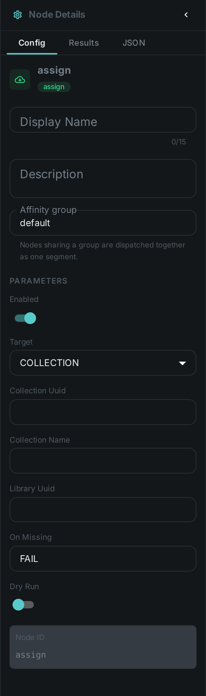
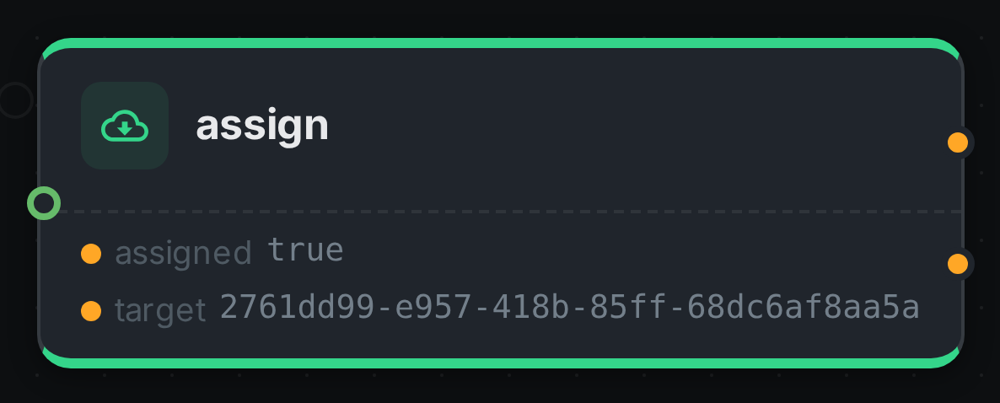

Curation is a decision, not a file operation. When you put a photo in a collection you are saying something about it — that it belongs with these others, that it is ready to publish — and nothing about where the photo lives on disk.
This node writes that decision. It adds an asset to a collection or a library, and it does not move, copy, rename or delete anything.
It runs no model and needs nothing installed alongside it.
Kind |
|
Applies to |
Any asset the system already knows about |
Input ports |
|
Output ports |
|
Requirements |
A connection to the server. No model, no sidecar, no GPU |
Persists to |
Collection or library membership |
It never touches the file
This is worth stating plainly, because the node next to it in the palette does exactly the opposite. Move relocates bytes. This one writes a single row saying "this asset belongs to that collection" and leaves the file exactly where it was, byte for byte.
They are two separate nodes for that reason. A single node that sometimes filed a photo and sometimes relocated 40 GB of video, depending on a setting, would be one nobody could reason about — and the two have nothing in common when they go wrong.
Collections and libraries
A collection is a grouping you make: a shortlist, a shoot, a set ready for review. An asset can be in as many as you like.
A library is where material was brought in. Adding an asset to one here records that it belongs there — it does not move the file into the library’s storage. If that is what you want, use Move with a library target.
Settings

| Setting | Default | What it does |
|---|---|---|
Target |
Collection |
Collection or library |
Collection |
— |
The collection, given either directly or by name. Set one or the other, not both |
Library |
— |
The library, when the target is a library |
If it does not exist |
Fail |
Fail the step, create it, or skip the item |
Dry run |
Off |
Report what would be filed and write nothing |
If it does not exist defaults to failing on purpose. A collection name that does not resolve is almost always a typo, and quietly doing nothing for an entire run is how a curation pipeline appears to work while producing an empty set.
Choosing create requires the pipeline’s account to be allowed to create collections. If it is not, the step fails and says so, rather than blaming the data.
Filing what a rule or a person decided
The node earns its place at the end of a routing chain.
-
Something decides — a person rating in the review screen, a tag, or a model’s verdict.
-
A Filter node routes on that decision.
-
This node files the result.
For example: filter by rating, take the >=8 bucket, and assign it to a Selects collection. Or
filter by tag, take hero, and assign it to the collection your website publishes from.
Adding the same asset twice is harmless. Membership is a set, so a second run reports assigned as
false and writes nothing — which means you can re-run a pipeline over a library you have already
curated without duplicating anything.
Seeing it run
Turn on Debug Mode and every node keeps what it produced, on the card itself. Below is a real run of this node, filing a photograph into a Selects collection.

The strip on the card lists what each output port carried — assigned, target. assigned is true
because this was the first time that photograph went into that collection; a second run over the same
asset reports false and writes nothing. target is the collection itself, which is what you wire
onwards if a later node needs to know where the asset was filed.
Good to know
-
Assets the system has not seen yet are skipped. A membership cannot exist without the asset record, so there is nothing to write.
-
Removing an asset from a collection is not something this node does. That is a review decision, made in the collection screen.
-
Deleting a collection removes its memberships and leaves every asset alone. Deleting a library is deliberately refused while assets still belong to it.